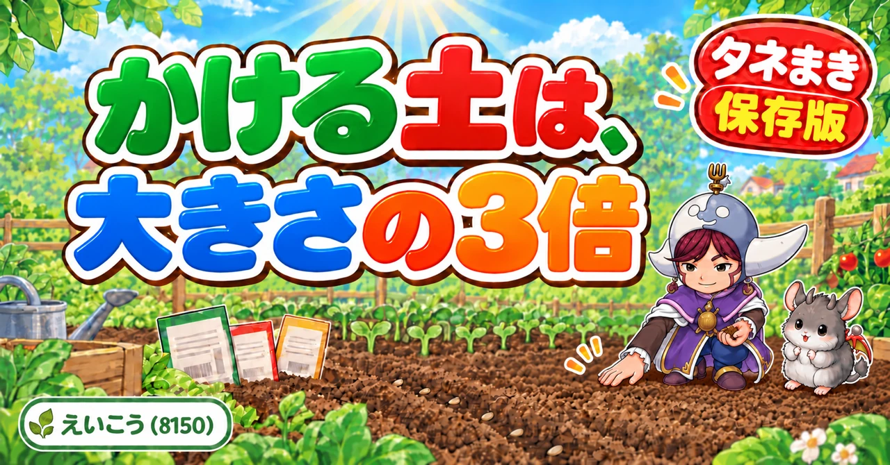
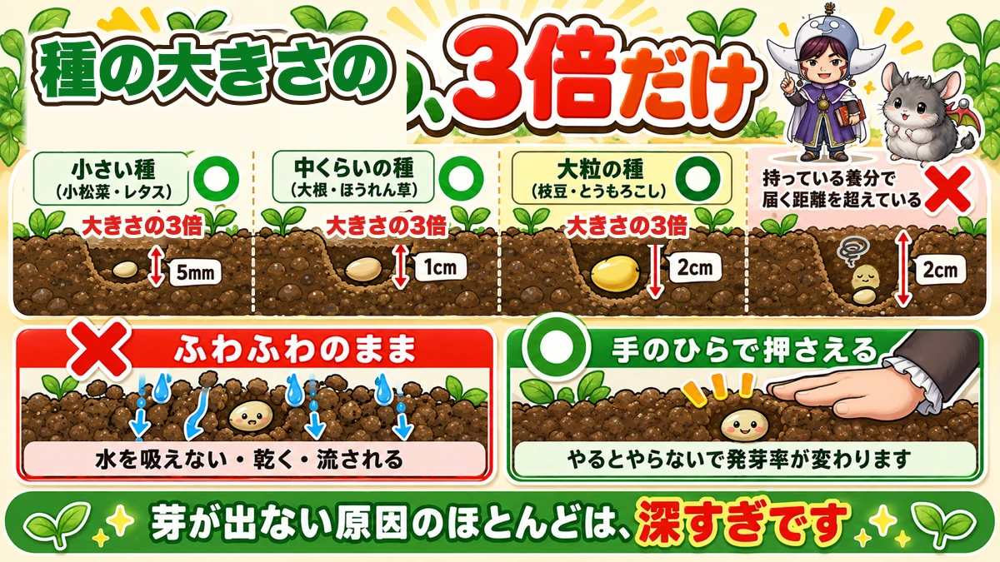
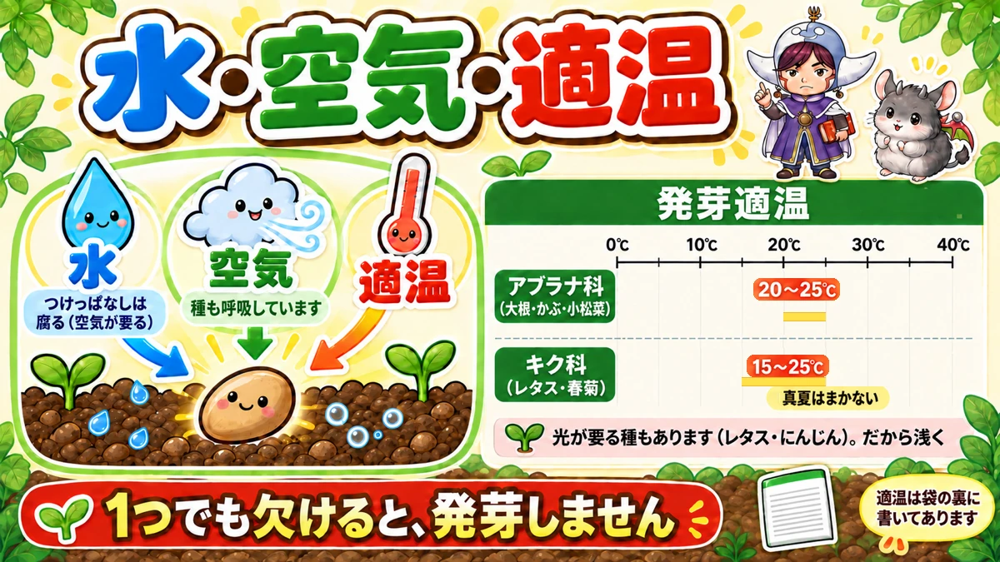
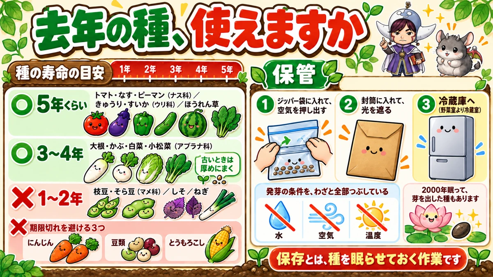

タネまきの段取り帳｜深さ・水やり・芽が出ないときの調べ方

どうも、8150（えいこう）です🌱 家庭菜園歴8年、理科の教員免許を持っていて、有機・無農薬で野菜を育てています。
📖 この記事の目次
この記事で分かること
- まく前に『種袋の適期』『光の好み』『まく場所』を確認すると、深さや水やりの迷いを減らせます。
- 土をかぶせる量は、種の寸法だけで決めません。光を好む種、普通の種、加工された種を分けて考えます。
- 水やりは回数より、種がある深さの湿り気が基準。乾燥と水のたまりすぎの両方を避けます。
- 土を押さえる目的は、種と土を接触させることです。湿った土を固く踏み締める作業とは分けます。
- 芽が見えないときは、日数、土の水分、温度、種の状態を順に確認。水や肥料を足す前に原因を調べます。
- 発芽後の被覆と間引きは、野菜と収穫したい大きさに合わせます。全部同じ日に外す、全部1本にする、という決め方はしません。
タネまきって、作業だけ見ると「穴を開けて、入れて、埋める」で終わりそうですよね。でも、同じようにまいたつもりでも、片方は出て、片方は静かなまま。種の中で何が起きているのか見えないのが、なんか難しいところです。
このページでは、みなさんが作業中に戻って確認できるよう、準備から間引きまでを順番にまとめました。初めてなら『早見』と『作業の手順』から。もうまいてあるなら『失敗の見分け方』を開いてください。
全部の野菜に同じ深さ、同じ量の水を当てはめなくても大丈夫です。まずは種袋を1つ選んで、その野菜に合う条件をそろえる。それだけでも、やることがかなり見えてきます☺️
早見：タネまきの基本（ひと目で分かる数字）
深さと日数は、作物名と一緒に見る
- 覆土の基本：一般説明には『種の大きさの約3倍』と『種の厚みの約2倍』があります。測る部分が違うので、2〜3倍と一括りにはしません。具体的なまき方は種袋の指示を優先します。
- にんじんの深さ：5mm程度という説明のほか、種が少し見えるほど浅くする実演があります。光と乾燥の両方を考え、深い溝へ埋め込まないのが共通点です。
- 大根の深さ：1cmという説明が複数あり、1〜2cmという説明もあります。同じ大根でも条件が異なるので、品種と土の状態を確認します。
- 枝豆の深さ：ポットと直まきの例では約2cm。大粒なら全部2cmとする数字ではありません。
- とうもろこしの深さ：二回転目の栽培例には約1cmという説明があります。枝豆の数字をそのまま移さず、その種の指示を見ます。
- 春菊の深さ：説明には0.5mm、5mm、種が見える程度という違いがあります。平均値を作らず、手元の種袋の浅まきの指定を確認してください。
- 発芽を待つ日数：秋のレタスには3〜4日、冬まきや晩秋の葉物には1週間〜10日という説明があります。日数を数えるときは、作物と季節をセットにします。
- 育苗期間の例：トマト約60日、きゅうり約40日、すいか約50日という説明があります。これは植えられる苗になるまでの目安で、発芽までの時間ではありません。
数字だけ抜き出すと、すごく分かりやすいんです。でも「大根の深さ」と「枝豆の深さ」を入れ替えたら、もう別の手順です。覚えるより、袋とこの記事を横に置いて確認する方が確実かなと思います。
温度・間隔・肥料で先に決めること
- 発芽に向く温度：春レタスの地温には15〜20℃という説明があります。野菜全体の共通設定ではありません。気温と地温も区別します。
- まき時：春まき、夏まき、秋冬まきで使う品種や準備が変わります。全国共通の『この月なら何でもまける』という暦は使いません。
- まく間隔：にんじんの省力化の例には3〜6cm、あとで6〜9cmへ間引く説明があります。普通のすじまきにも、そのまま同じ数字が必要とは限りません。
- 1か所の粒数：枝豆には3粒まく例と、4粒まいて2本残す例があります。大根を通常の大きさに育てる場合は、段階的に減らして最後に1本にする説明があります。
- うね幅・最終株間：タネまき全般で共通する数字はありません。野菜別の説明と種袋で決め、作業する通路も残します。
- 元肥からまくまで：土づくりの説明には約2週間、2〜3週間、約3週間、寒い時期の約4週間という違いがあります。肥料の種類と土の条件が違うため、最短の数字だけを採りません。
- 追肥・収穫・連作の間隔：作物別に決める項目です。発芽させる手順だけで収穫日や連作の年数まで決めず、まく野菜の記事と照合します。
ここで大切なのは『発芽まで』『苗になるまで』『収穫まで』を分けることです。種から始める計画に、苗を植えてからの日数だけを書いてしまうと、予定がずれます。
まく前の小さな記録欄
- 野菜名と品種名を残した
- 種袋の地域別の適期を見た
- まく日と、発芽を確認する予定日を書いた
- 直まきか、容器で育苗するかを決めた
- 土を準備した日と、すでに入っている肥料を確認した
- 深さ、残す本数、被覆の目的を決めた
記録は立派なノートでなくてOKです。袋に日付を書き添えるだけでも、「古い種だったかな」「まだ3日しかたってなかったな」と戻れます。覚えているつもりでも、別の野菜をまくと日付が混ざるんですよね。
作業の手順（時期の順）
1．種袋を見て、今回のまき方を選ぶ
- 野菜名だけでなく品種名を確認し、地域と季節に合うまき時を見ます。
- 発芽に向く温度、深さ、発芽日数が書かれていれば、その数字を作業の基準にします。
- 畑へ直接まくか、容器で苗を作るかを決めます。
- 一度に使う数と、発芽後に残す数を見積もり、必要な分だけ種を取り出します。
袋の表は写真が魅力的ですが、作業に役立つのは裏側です。『春にも秋にもまける野菜』でも、手元の品種が両方に対応するとは限りません。野菜の一般的な適期と、その品種の適期を分けて見てください。
光を好む種は、土の下へ深く隠さないことが大切です。一方、光を好まない種もあります。種の小ささだけで、全部を土の表面に置く方法へそろえないようにします。
直まきは、最終的に育てる場所へ種をまく方法です。にんじんなどの根菜では、この方法を中心に考えます。育苗は、容器などで苗を作ってから植え替える方法。枝豆のように、直まきと育苗の両方の例がある野菜もあります。
育苗なら、小さな容器で雨や温度への対応をまとめやすくなります。ただし、苗を作る時間と植え替える作業は必要です。『畑に通える回数』『管理できる置き場所』『苗が大きくなったあとの行き先』まで考えて選びましょう。
2．土づくりは、種を出す前に済ませる
- まく場所に水がたまらないか、雨のあとに確認します。
- 以前に入れた肥料と土づくりの日付を調べ、まく直前に同じ分量を追加しないようにします。
- 大きな塊がある場所や表面が固まった場所を整え、予定の深さで種を置ける状態にします。
- うねの形と通路を作り、植え穴だけが深いくぼみになっていないか見ます。
- 土がぬかるんでいるなら、その日の鎮圧や種まきを急がず、作業できる状態を待ちます。
土の準備とタネまきを同じ日に全部片付けたくなりますが、元肥を入れたあとの待ち時間が必要な場合があります。分解中の肥料や未熟な有機物の影響を受けると、種や出たばかりの根が傷むことがあります。
待ち時間は、暦に丸を付けたら終わりというものでもありません。寒さ、土の湿り気、使ったものの状態で変わります。約2〜4週間の異なる説明があるからこそ、手元の肥料の表示と、実際の土づくりの条件を確認してください。
すでに野菜を育てていた場所では、前作で何を入れたかも手掛かりです。『新しくまくから、新しく全部足す』と考えると、肥料が多すぎる場合があります。発芽しないときに肥料を追加することも、最初の対処にはしません。
3．容器で育苗するなら、土と水を先に整える
- 育苗する作物と期間に合う土を選び、肥料が入っているかを表示で確認します。
- 容器へ土を入れ、種をまく前に全体を湿らせます。
- 水が引いたことを確認してから、決めた深さに種を置きます。
- 野菜名、まいた日、必要なら品種名を表示し、容器を取り違えないようにします。
- 発芽後に置く明るい場所と、苗が育ったときの移し先を用意します。
土が乾いたまま、種をまいたあとに一気に水を注ぐと、十分に湿る前に種が動くことがあります。先に土へ水を行き渡らせておく方法なら、まいたあとの強い水流を減らせます。
ただし『先に湿らせたから、その後ずっと水はいらない』ではありません。枝豆の例では、湿った土を使ってまいた直後の給水を省く説明がありますが、芽が出て乾燥したら水が必要になります。作業直後の判断と、数日後の判断は分けてください。
育苗用の土も、商品名だけで後の管理を決めません。肥料の持ち方や植え替えまでの期間が違います。苗が育ったあとに別の容器へ移す説明があるからといって、すべての野菜を同じ日数で植え替える必要はありません。
4．まき溝・植え穴を作り、種を離して置く
- すじまきなら、予定の深さで溝をそろえます。点まきなら、1か所にまく粒数と穴の間隔を決めます。
- 種を一度にこぼさず、見える位置で少しずつ置きます。
- 1つの穴へ複数粒をまくときも、全粒を一点に積み重ねないようにします。
- 深すぎる場所、雨水が集まるくぼみがあれば、種を入れる前に直します。
- まき終わった場所を見直し、種が集中した部分をそのまま埋めてしまわないようにします。
『たくさん出たら安心』と思いがちですが、その安心には間引き作業が付いてきます。密集した芽を抜くと、残す株まで一緒に動くことがあります。まくときの少しの手間が、あとで根を守ることにつながるんですね。
にんじんには、発芽がそろいにくい夏に多めにまいてあとで減らす考え方と、扱いやすい種を一定間隔でまいて間引きの手間を減らす考え方があります。後者でも、出なかった場所ができる可能性は残ります。粒数と作業量の両方を見て選びます。
初めてなら、まず短い列で深さと間隔を確認してから続きをまくと、やり直しやすいです。全部まいてから「あ、深かったかも」と気付くと、種を探すところからになります。土の中の小粒探し、なかなか大変です😅
5．土をかぶせ、種の周りを押さえる

- 種袋で確認した厚さを目安に、土をかぶせます。
- 光を好む種は深く埋めず、浅い位置を保ちます。
- まいた部分の土を押さえ、種と周りの土を接触させます。
- 土の湿り気を見ながら力を調整し、表面を固い板のようにしないようにします。
- 種が見えすぎている場所と、土を厚く盛った場所がないかを確認します。
図の『3倍』は一般的な目安の一つです。光を好む種の浅まきや、厚みを基準にする別の説明まで、全部を同じ倍率で決める図としては使いません。
この押さえる作業を鎮圧と呼びます。名前はちょっと強そうですが、目的は種の近くに水を届かせること。種が大きな隙間に浮いたままだと、土が湿っていても十分に水を受け取れないことがあります。
畑のにんじんでは体重を使って押す説明がある一方、雨のあとの湿った土では軽く押す説明があります。小さな育苗容器でも軽い鎮圧の例があります。みなさんの土がすでに湿っているのに、強い踏み方だけを追加しないでください。
6．種を動かさない水やりをする
- まく前の土の水分と、まいたあとの湿り気を確認します。
- 水を与える必要がある場合は、種のない場所で水流を安定させます。
- 低い位置から穏やかに水を広げ、同じ場所へ勢いよく注ぎ続けないようにします。
- 種が流れていないか、土がえぐれていないかを見ます。
- 翌日以降は、種がある層の乾き具合を確かめてから給水を決めます。
水やりの失敗には、『水が少なかった』だけでなく『水で種を動かした』もあります。土の表面が濡れたかどうかと、種が元の場所にあるかどうかを、別々に確認するのがポイントです。
暑い時期の浅まきは乾きやすく、寒い時期に保水したうねは乾きにくくなります。朝に必ず1回という予定だけで動かず、土の状態を見ましょう。畑と小さな容器でも、同じ間隔で水を与えればよいとは限りません。
7．被覆は、何を防ぐかを決めて使う
- 乾燥、大雨、鳥、寒さなど、今回守りたいものを整理します。
- 不織布を使う場合は、種をまいた面を覆い、飛ばないように固定します。
- 水分と温度の様子を見て、覆ったことだけで安心して観察をやめないようにします。
- 芽が出たら、その作物の説明に合わせて撤去、別資材への切り替え、継続を選びます。
- 継続するなら、苗の成長を妨げない掛け方へ調整します。
不織布は、土の乾燥を抑え、保温にも役立つ資材です。でも、冬の保温と夏の高温への対処は同じではありません。掛けたあとの温度が目的に合っているかを見る必要があります。
透明なビニールと不織布も、同じ布として扱いません。発芽後に内側のビニールだけを外す説明があります。『被覆を取る』という一言を見たときは、何を取るのかまで確認しましょう。
8．発芽を確認し、間引きへつなげる
- 種袋の目安日数を見ながら、芽が出た位置と本数を確認します。
- 発芽したら、光不足で茎ばかり伸びないよう、置き場所と被覆を見直します。
- 残す本数を作物別に決め、本葉の増え方に合わせて間引きます。
- 根が絡む場所は無理に引き抜かず、残す株を動かさない方法を選びます。
- 間引き後に土が浮いたら整え、根元がぐらつく株は土寄せも検討します。
通常の大根には、本葉が約2枚のころ、3〜4枚のころ、4〜5枚のころと段階的に減らす説明があります。最初から最後の1本だけを決めて終わりにせず、苗の育ちを見ながら進める方法です。
冬の小さめ収穫のほうれん草には、密植したまま大きい株から切って収穫する例があります。これは、大きな株を育てるための普通の間引きと目的が違います。『抜かない方法がある』から全部の野菜を密集させるのではなく、収穫したい姿から決めてください。
失敗の見分け方（症状→原因→やること）
まいた場所全体から、まだ芽が見えない
- 症状：列全体、または容器全体が静かなままで、地上に芽を確認できません。
- 考えられる原因：まだ必要な日数がたっていない、温度が合っていない、深まき、水不足、過湿、種の劣化などです。
- やること：まいた日と種袋の目安を確認し、次に土の水分とまいた深さを調べます。水を足す前に、すでに湿っていないか確かめてください。
全体が出ない場合は、共通する条件から見ると整理しやすいです。同じ土、同じ置き場所、同じ深さなら、そのどれかが合っていない可能性があります。ただし「全滅だから古い種」と一つに決めず、温度や水分も順番に見ます。
発芽日数は、まいた日から機械的に判定する期限ではありません。寒い条件の説明と、適温での短い日数を混ぜると、まだ育っている種までまき直すことになります。日数が過ぎたら、次の確認へ進む合図にしましょう。
湿っているのに、追加の水やりをしてしまう
- 症状：土は濡れているのに芽が出ず、毎日の水やりを続けています。
- 考えられる原因：水が多くて土の中の空気が減った、くぼみに雨水が集まった、冷えた土が乾きにくい、といった状態です。
- やること：定時の給水を止め、雨水のたまり方や排水を確認します。種の状態を少量だけ見て、腐っているなら土の条件を直してからまき直します。
ここでの『止める』は、乾き切るまで放置することではありません。必要な湿り気が残っている間は、追加しないという判断です。表面を見ただけでは分かりにくい場合は、種のないすぐ横で土の湿りを確認します。
濡れている土へ、肥料まで足して救おうとするのも控えます。水はけの悪さや通気性の問題なら、栄養を追加しても原因は残ります。何が不足しているのか分からないときこそ、足す作業をいったん休むと見えてくることがあります。
土の表面がすぐ乾き、発芽がそろわない
- 症状：一部だけ芽が出て、残りの場所は乾いたままです。とくに浅くまいた列で起きます。
- 考えられる原因：種がある層まで水が届いていない、吸水後に乾燥した、場所ごとの乾き方が違う、などです。
- やること：列全体の湿りを確認し、穏やかな水流で必要な範囲を湿らせます。被覆を使うなら、乾燥防止という目的に合う方法を選びます。
にんじんのような浅まきでは、下の土が湿っていても、種の周りだけ乾くことがあります。「土の奥に水があるから大丈夫」と「種が水を受け取れる」は別なんですね。種の位置に合わせて見ることが大切です。
乾く場所が毎回同じなら、そこだけ土の状態や水の当たり方が違わないか確認してください。列の端、水やりの折り返し地点、被覆がずれた場所などを見ると、作業のどこを変えるか考えやすくなります。
雨や水やりのあと、芽が別の場所にまとまる
- 症状：まいた列に空白があり、その先や低い場所へ芽が集中しています。
- 考えられる原因：強い水流、大雨、深いくぼみへの流入、土と種の密着不足です。
- やること：水の流れた跡を見て、次の水やりを低い位置から穏やかにします。まき直す場所は、くぼみと土の表面を整えてから使います。
この場合は、発芽できなかった種ばかりとは限りません。まく位置が動いた可能性があります。芽が集まった部分を見ずに空白だけまき足すと、密集している場所の間引きが後回しになります。
残った苗をどの間隔で育てられるかも確認しましょう。移植できるかどうかは作物で違うので、余った苗を全部よその穴へ移す方法にはしません。
土の中で種がやわらかくなっている
- 症状：出ない場所を少し確認すると、種が崩れる、腐っている、健全な根が見えない状態です。
- 考えられる原因：過湿、排水不良、深まきと長い停滞、土づくり直後の影響などが考えられます。
- やること：同じ条件のまま種だけ足さず、水はけ、深さ、元肥を入れた時期を見直します。健全でない種を確認した場所は、条件を整えてからまき直します。
調べるときは全部の列を掘り返さなくて大丈夫です。代表になる場所を少量だけ確認します。白い根が出ている種まで折ったり、乾かしたりすると、確認の作業で傷めてしまいます。
土の中で根や芽が動き始めているなら、地上にはまだ見えないだけかもしれません。『種が腐った』『種は生きて動いている』『種自体が見つからない』を分けて判断します。この3つで、次にすることが変わります。
穴の中に、種そのものが見つからない
- 症状：決めた場所を確認しても、種や根の痕跡を見付けられません。
- 考えられる原因：鳥に持ち去られた、水で流れた、確認した位置がずれた、などです。
- やること：周囲の流れた跡や被覆の状態を調べます。鳥害が考えられるときは、種を追加するだけで終えず、守る方法も見直します。
種がないから鳥、とすぐ決める必要はありません。強い雨のあとなら流出も候補です。まいた位置と確認した位置が合っているかも、先に見てください。
原因が分からなくても、同じ穴へ何度も追加する前に、まき方を記録すると状況が整理できます。追加した日を分けておけば、あとから遅れて出た芽と新しくまいた芽を混同しにくくなります。
発芽した苗が、細長く頼りない
- 症状：茎が長く伸び、葉が小さく、苗が倒れやすくなっています。
- 考えられる原因：発芽後の光不足に加え、水や温度の管理が合っていない可能性があります。
- やること：置き場所の明るさ、被覆を残す理由、土の湿り、温度を確認します。発芽前の状態をそのまま続けないようにします。
これは徒長と呼ばれる状態です。芽を出すために温度や湿度を保てても、その後の苗が丈夫に育つとは限りません。発芽は、管理を一度切り替えるタイミングなんですね。
種が光を好まない場合でも、出たあとの苗までずっと暗くしてよい、という意味にはなりません。『発芽するときの光の好み』と『葉を育てるための明るさ』を分けて考えます。
間引くと、残したい苗も一緒に浮く
- 症状：1株抜いたら、隣の株が傾く、根元の土が持ち上がる状態です。
- 考えられる原因：種を一点に集めすぎた、間引きが遅れて根が絡んだ、密集した株を強く引いた、などです。
- やること：引き抜く手を止め、残す株を動かさないようにします。絡みが強い場所は、根元で切る方法を検討します。
浮いた根元をそのままにしないことも大切です。周りの土を整え、苗が土に接触する状態へ戻します。次のタネまきでは、まく時点で粒を少し離し、必要以上の密集を避けましょう。
間引きは、余った芽を片付けるだけの作業ではありません。残す苗の水、光、根の空間を確保する作業です。『もったいないなあ』となる気持ちは分かりますが、最後に育てたい姿から逆算すると選びやすくなります。
説明が分かれていること
覆土は『大きさの3倍』か『厚みの2倍』か
- Aという説明：一般的なタネまきでは、種の大きさの約3倍を目安にします。大根で約3mmの種を約1cmの深さに置く実演があります。
- Bという説明：種の厚みの約2倍を基本とし、種の性質も考慮します。
- どう考えればよいか：まず、何を測っているのかを分けます。大きさと厚みは同じではなく、光を好む種には浅まきの条件も付きます。袋に具体的な深さがあれば、それを先に使います。
『どっちもあるから2.5倍』とはしません。平均すると、どちらの説明でも使っていない基準ができてしまいます。種の長い側を測るのか、厚さを測るのかで、同じ種でも数字が変わるからです。
大根には1cmと1〜2cmの説明があり、春菊には0.5mm、5mm、見える程度の説明があります。この差を、全野菜の共通範囲として0.5mm〜2cmに広げても、作業には使えません。野菜ごとに分けて照合してください。
鎮圧は、強く踏むのか、軽く押すのか
- Aという説明：にんじんの畑では、足や体重を使って種と土を密着させます。
- Bという説明：雨のあとの湿った土や育苗容器では、軽く押さえます。
- どう考えればよいか：狙いは密着で、力比べではありません。土の水分、固さ、容器の大きさを先に見て、必要な力に調整します。
乾いたふかふかの土と、雨を含んだ土では、同じ力を加えても仕上がりが違います。「強く押したら成功」という説明から力だけを取り出すと、湿った土を固くしすぎることがあります。
手で押す、足で押すという道具の違いも、土の条件と一緒に考えます。家庭菜園のすべての容器で再現する強さの規格はありません。押したあと、種の周囲が落ち着いたかを見る方が実用的です。
発芽までは毎日水やりか、最初だけか
- Aという説明：覆っていない秋冬野菜のうねや、乾きやすい夏のにんじんでは、発芽まで毎日の給水、状況によって朝晩の給水を行います。
- Bという説明：マルチと不織布で保水した秋冬のうねでは、最初に水を与えたあとの給水がほぼ不要になる例があります。
- どう考えればよいか：乾燥の速さが違う方法です。裸の土、覆った土、容器を分け、種の周りに水分が残っているかを確認して決めます。
マルチは、土の表面を覆う資材を使った栽培方法です。保水された畑の『追加不要』を、小さな容器へそのまま当てはめないでください。反対に、乾きやすい裸の土の『毎日』を、湿ったうねへ持ち込むと過湿になります。
水やりの時刻にも違いがあります。夏のにんじんには夕方以降、夏野菜の育苗には朝を中心にし、昼以降を控える説明があります。どちらかを全野菜の正解にせず、暑さ、乾燥、苗の段階を見て判断します。
育苗の土は、専用のものか、肥料入りのものか
- Aという説明：タネまき用の土で発芽させ、その後は苗の育ちや植え替えに合わせて肥料を補います。
- Bという説明：玉ねぎの苗づくりでは、肥料を含む土を使い、あとから補う肥料の手間を減らす方法があります。
- どう考えればよいか：作物、育苗期間、土に入っている肥料の量をそろえて比べます。『専用なら全部そのまま』『肥料入りなら追加不要』と固定しません。
ここでは特定の商品や配合割合をおすすめしません。同じ『土』という名前でも、用途と肥料の持ち方は違います。購入した土の表示を確認し、種をまいてよい用途か、植え替えまでどのように管理するかを決めます。
元肥を混ぜた直後の畑の話と、育苗用に調整された土の話も分けます。「肥料が入っている」という共通点だけでは、同じ待ち時間や同じ使い方になりません。
不織布は、発芽したら外すのか、残すのか
- Aという説明：大根では発芽後に不織布を外し、防虫ネットへ切り替える方法があります。とうもろこしでも、発芽後に外す説明があります。
- Bという説明：冬ほうれん草では本葉が増えるころまで、厳寒期の大根では収穫近くまで、掛け方を調整しながら使う例があります。
- どう考えればよいか：発芽前の乾燥・鳥害対策と、発芽後の防寒を分けます。目的が終わったのか、次の目的が残るのかを見て判断します。
『不織布は発芽したら必ず片付ける』も、『冬まで必ず残す』も、全作物の共通ルールにはなりません。冬の話と、まだ暖かい時期の話を同じ掛け方にそろえないようにします。
内側の透明なビニールだけを発芽後に外す方法もあります。不織布を残す説明と混ぜると、外すべきものまで残すことになります。重ねて使う場合は、それぞれの役割を書いておくと迷いにくいです。
多めにまいて間引くか、最初から間隔をあけるか
- Aという説明：発芽がそろいにくい夏のにんじんでは、やや多くまいて欠株を減らし、発芽後に間引きます。
- Bという説明：扱いやすい粒の種を一定間隔に置き、間引きを減らす方法があります。冬の小さめのほうれん草には、間引かず順に収穫する方法もあります。
- どう考えればよいか：発芽の不確実さを粒数で補うのか、後の作業を少なくするのか、収穫サイズを小さくするのかを分けます。
同じ『間引かない』でも、一定間隔でまく方法と密植のまま小さく収穫する方法は別です。そこを混ぜて密集した大根を大玉に育てようとすると、計画が合わなくなります。
種の加工も一括りにしません。まきやすく粒を大きくしたものと、薬剤処理で色が付いたものを同じ意味にせず、袋の説明を確認してください。
よくある質問
プランターでも、畑と同じまき方でよいですか
深さや種の光の好みは確認しますが、水やりの間隔まで同じにはしません。容器の土は畑と条件が違うので、種がある層の湿りと水の抜け方を見ます。畑で追加の給水が不要だった例を、そのまま容器の予定にしないでください。
小さい種は、全部5mmでよいですか
同じ小ささでも、光への反応や個別の指定が違います。春菊には0.5mmと5mmの異なる説明があり、数字を一律にする根拠にはできません。種袋に具体的な深さがあれば、それを使い、まくときに深い穴へ落とさないようにします。
深く埋めれば、乾きにくくなりませんか
乾きにくくするだけなら魅力的ですが、光を好む種は暗くなり、地上へ出る距離も長くなります。深さで乾燥を解決せず、指定の浅さを保ったうえで、水分と被覆を調整します。種に合わない深さで守ると、別の困りごとが増えます。
雨の日の前にまけば、水やりはいりませんか
雨で土を湿らせられることはありますが、大雨には種の流出や過湿の心配もあります。予報だけで給水の有無を決めず、まく時点の土を見ます。強い雨を利用して、種を押さえる作業まで省くことはしません。
まいたあとは、毎日見に行く必要がありますか
確認したいのは、湿り、温度、被覆のずれ、発芽の変化です。乾きやすい浅まきほど、変化を見逃さない管理が必要になります。通うのが難しい場合は、直まきに向く野菜か、家で育苗できる野菜かを分け、管理できる方法を先に選びます。
先に水へつけておけば、早く芽が出ますか
水を吸うことは必要ですが、水につけ続けることと発芽しやすいことは同じではありません。湿らせた紙で発根させる例でも、水が多すぎると酸素不足になる説明があります。全野菜を同じ時間だけ浸す手順にはせず、その種の扱いを確認してください。
家で白い根を出してから、畑へまけますか
厳寒期には、家で発根を確認してから畑へ移す方法があります。ただし、小さな根を傷めず扱う作業と、移した先の適切な温度・水分が必要です。温度を管理した装置の発根日数を、普通の室内や全作物の共通日数にはしません。
芽が出ないので、肥料を追加してもよいですか
最初に確認するのは、日数、深さ、湿り、温度です。出ない原因が水や空気の状態なら、肥料では直りません。元肥を入れた直後が原因の候補になることもあるので、追加する前に土づくりの記録を見てください。
去年の余った種は、全部捨てた方がよいですか
全部を同じ寿命として扱いません。ネタ帳には、にんじんの古い種で発芽率が落ちる説明がありますが、全野菜の保存年数を決められる材料はありません。袋の期限と保管した状態を確認し、適期が短く、失敗を避けたい栽培では新しい種を選ぶことも考えます。
古い種なら、多めにまけば解決しますか
多くまく方法は、発芽しない粒があることへの備えにはなりますが、温度や水分の不適合までは直しません。出たあとに過密になる場合もあります。古さだけを見ず、条件を整え、間引きまでできる粒数にします。
種に色が付いていますが、すべて同じ加工ですか
色だけで加工の目的は判断できません。粒を扱いやすくした加工と、薬剤処理を同じものとして扱わないでください。袋の表示を確認し、加工された外側の大きさを、裸の種の厚さと同じ物差しで深さへ換算しないようにします。
発芽したら、不織布はすぐ外しますか
作物と目的によります。発芽後に別の資材へ切り替える方法と、冬の保温のため残す方法があります。まず、何を防ぐために掛けたかを確認し、苗の成長と温度に合わせて扱いを変えます。
間引きは、全部1本になるまで続けますか
通常の大根には最後に1本にする説明がありますが、枝豆には2本残す例があります。冬の小さめ収穫には複数株を残す方法もあります。野菜名と収穫サイズを決めてから、残す本数を選んでください。
出なかった場所へ、隣の苗を移してもよいですか
スナップエンドウには、余る苗を欠株部分へ移す例があります。ただし、すべての根菜や苗に使える方法ではありません。移植に向く作物かを確認し、可能な場合も根と土をなるべく崩さず、移した場所と元の場所の隙間を整えます。
いつまで待ってから、まき直せばよいですか
種袋の発芽日数と、その期間の温度を確認します。冬まきの1週間〜10日という説明だけを、全部の種へ当てはめません。日数が過ぎたら少量を調べ、根が出ているなら待つ、腐敗や流失が確認できたら条件を直してまき直す、と分けます。
学ぶ：発芽と水・空気・光のしくみ🔬
水を吸うことと、水に沈むことは違う

発芽を考える入口は、水、空気、適切な温度です。乾いた種が水を受け取ることで、発芽へ向かう準備が始まります。だから乾燥したままでは進まず、吸水したあとの乾燥にも注意が必要になります。
でも、水を多くすれば多くするほどよいわけではありません。種も呼吸するので、周囲に空気が必要です。土の隙間が水で満たされた状態が続くと、酸素を受け取りにくくなります。
『湿っている』と『水がたまっている』を分けるのは、このためです。両方とも見た目は濡れていますが、種の周りの空気の状態が違います。水を足すと安心する気持ちになっても、土の中では困ることがあるんですね。
湿った紙などで発根を確認する方法にも、この考え方が使えます。水を少し含ませることと、容器へ水をたっぷりためることは別の操作です。発芽の条件をそろえるには、水だけを満点にするのではなく、空気と温度も一緒に見ます。
土を押さえると、水のつながりが変わる
土には粒と粒の間の隙間があります。種のすぐ周りに大きな空間があると、近くの土に水があっても、種へ届きにくい場合があります。鎮圧は、その周囲を落ち着かせ、土と種が触れる状態を作る作業です。
ここに関係するのが毛細管現象です。細い隙間を通って水が動く現象で、土の中の水の動きにも関わります。土の水と種の接点があることが、種の吸水を助けます。
ただし、押す力を増やせば水が無制限に上がる、という話ではありません。土の水分や粒の状態が違えば、同じ押し方でも結果は変わります。雨後の土を強く固めると、今度は通気性の問題が出ることがあります。
つまり、鎮圧で作りたいのは『種に水が届く接触』です。乾燥した土へ種を押し付けるだけでは水は生まれませんし、水浸しの土を押しても酸素不足は解消しません。水分管理と鎮圧は、片方で片方を省ける関係ではないんです。
光は、種ごとに違う合図になる
光を好む種では、深く埋めることで発芽しにくくなります。にんじん、レタス、春菊の浅まきの説明は、この性質とつながっています。
一方で、光を好まない種の説明もあります。だから、発芽に必要な条件を『明るければ全部よい』とまとめません。水、空気、温度を考えたうえで、その種に合う光の扱いを確認します。
浅い位置は光を受けやすい半面、乾きやすく、強い水流の影響も受けやすくなります。好光性と聞いて土の上に置いて終わりにすると、今度は水の問題が残ります。浅さを守りながら、湿りと密着を整えることが必要です。
発芽後の苗は、また別の段階です。葉を広げて育つ苗が暗い場所にあると、光を求めて茎が伸び、細長くなります。種が発芽するときの光の好みと、苗が育つときの光不足を区別すると、被覆を見直す理由も分かりやすくなります。
気温ではなく、種がいる場所の温度を見る
天気予報の気温は参考になりますが、土の中の温度をそのまま示す数字ではありません。日当たり、被覆、土の水分などによって、種のある場所の温度は変わります。
春レタスの説明では、発芽に関わる数字を地面の温度として扱っています。外が暖かく感じる日でも、土がまだ冷たいなら、種には条件がそろっていない可能性があります。
保温資材を使う理由も、空気を暖かく感じさせるためではなく、種のある場所を適した状態へ近付けるためです。逆に高温の時期には、温度を上げすぎない管理が必要になります。
温度管理した発根装置には、ナスの台木用の種で、袋の25〜30℃という範囲に合わせる例があります。その設定をレタスにも使う、といった移し方はしません。何度がよいかより先に、どの種を育てるかが決まるわけですね。
地上に何もなくても、土の中は動いていることがある
発根は根が出ること、この記事で発芽を確認するのは地上に芽が見えることとして考えると、観察が整理しやすくなります。白い根が出た段階と、苗が見えた段階を同じ日数で数えません。
土の中を少量だけ確認する方法では、根や芽がすでに動いているかが判断の手掛かりになります。生きて伸びている種に、地上から見えないという理由だけで水を増やす必要はありません。
深くまいた場合は、地上までの距離が長くなります。光の条件だけでなく、出るまでの時間や、長く湿った土の中にいる影響も考える必要があります。覆土は種を隠すために多く積むものではなく、出てこられる条件を整えるものです。
種の古さと、条件の合わなさを分ける

種の状態が悪ければ、適した土でもそろって出ないことがあります。一方、新しい種でも水、空気、温度、光の扱いが合わなければうまく進みません。袋の年だけで原因を決めないのは、そのためです。
図の保存年数は目安として見てください。この回のネタ帳には、すべての野菜の保存期間を同じ条件で確かめた一覧はありません。図の年数以内なら発芽が保証される、と読まないようにします。
にんじんには古い種で発芽率が下がる説明がありますが、前年購入の種が必ず全滅するという意味でもありません。いつ買ったかに加え、どう保管されていたか、袋の期限はどうかを確認します。
『眠っているだけ』なのか『発芽する力が落ちた』のかは、見た目だけで簡単に判定できません。条件を整えたうえで結果を見ることが必要です。だからこそ、まいた日と種の情報を残しておくと、次の判断に使えるんですね🔬
まとめ
タネまきは、種を埋めて終わりではなく、芽が出て、残す株を決めるところまでが一続きの作業です。みなさんが次にまくときは、まずこの順番で確認してみてください。
- 種袋で品種、地域別の適期、深さ、発芽日数を確認する。
- 直まきか育苗かを選び、土と水はけの準備を先に済ませる。
- 光を好む種の浅まきを守り、必要な粒数を離して置く。
- 土をかぶせたら、湿り具合に合う力で種の周りを押さえる。
- 水流で種を動かさず、翌日以降は種のある層の水分を見る。
- 被覆は目的と作物に合わせ、発芽後に扱いを見直す。
- 芽が出ないときは追加の水や肥料より先に、日数と土と種の状態を調べる。
- 間引きは、最後に育てたい本数と収穫サイズから決める。
覆土の倍率、水やりの回数、待つ日数に違う説明があっても、全部覚えなくて大丈夫です。『何の種を、どんな土へ、どの季節にまいた話か』を確認すると、選べる手順が絞れます。
深さだけを直して水浸しの土へまき直す、水だけを増やして光を好む種を深く埋めたままにする。こうした対処では、別の条件が残ってしまいます。症状を見たら、一つずつ原因を分けるのが近道です。
次のタネまきでは、袋の裏を見て、まいた日を残すところから始めてみてください。芽が出る前の静かな時間も、「今日は何を確かめようかな」と観察できるようになると、ちょっと楽しくなりますよ🌱
最後まで読んでくださって、ありがとうございます！
セルトレイ
畑に直まきすると、深さも間隔もバラつきます。セルトレイなら1マス1粒で深さがそろうので、発芽率がはっきり上がります。白菜やキャベツのように苗を育ててから植える野菜では、これが一番の近道です。
![[商品価格に関しましては、リンクが作成された時点と現時点で情報が変更されている場合がございます。]](https://hbb.afl.rakuten.co.jp/hgb/56d221a0.da732c49.56d221a1.b57a6709/?me_id=1230952&item_id=10006155&pc=https%3A%2F%2Fthumbnail.image.rakuten.co.jp%2F%400_mall%2Fnou-nou%2Fcabinet%2Fnousi2%2F0108007400004.jpg%3F_ex%3D240x240&s=240x240&t=picttext "[商品価格に関しましては、リンクが作成された時点と現時点で情報が変更されている場合がございます。]")

タネまき用の培土
畑の土でまくと、肥料が効きすぎて根を傷めることがあります。タネまき用は肥料が控えめで粒も細かいので、小さい種ほど差が出ます。

ハス口の細かいジョウロ
まいた直後の水やりで種が流れるのは、水の勢いが強すぎるからです。ハス口が細かいものを選ぶと、上からそっと降らせられます。

不織布
まいたあとにかけておくと、雨で種が流れず、表面も乾きません。本葉が1〜2枚出るまでが目安です。
![[商品価格に関しましては、リンクが作成された時点と現時点で情報が変更されている場合がございます。]](https://hbb.afl.rakuten.co.jp/hgb/56bc237a.e97551b1.56bc237b.2513ed10/?me_id=1310260&item_id=10000879&pc=https%3A%2F%2Fthumbnail.image.rakuten.co.jp%2F%400_mall%2Fdiokasei%2Fcabinet%2F007fusyokufu%2F12g%2Fimgrc0092049705.jpg%3F_ex%3D240x240&s=240x240&t=picttext "[商品価格に関しましては、リンクが作成された時点と現時点で情報が変更されている場合がございます。]")